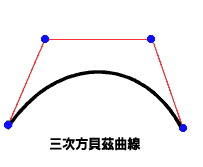
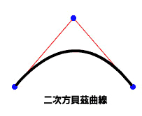

| 套件 | flash.display |
| 類別 | public final class Graphics |
| 繼承 | Graphics |
| 語言版本: | ActionScript 3.0 |
| 執行階段版本: | AIR 1.0, Flash Player 9, Flash Lite 4 |
graphics 屬性。 下列提供一些簡單易用的助理函數：drawRect()、drawRoundRect()、drawCircle() 和 drawEllipse()。
您不能直接從 ActionScript 程式碼建立 Graphics 物件。 如果您呼叫 new Graphics()，就會擲出例外。
Graphics 類別是最下層的類別；它不會有子類別。
 隱藏繼承公用屬性
隱藏繼承公用屬性 顯示繼承公用屬性
顯示繼承公用屬性| 方法 | 定義自 | ||
|---|---|---|---|
beginBitmapFill(bitmap:BitmapData, matrix:Matrix = null, repeat:Boolean = true, smooth:Boolean = false):void
以點陣圖影像填滿繪圖區。 | Graphics | ||
指定簡單的單色填色，後續在繪製時呼叫其它 Graphics 方法 (例如 lineTo() 或 drawCircle()) 便可以使用此填色。 | Graphics | ||
beginGradientFill(type:String, colors:Array, alphas:Array, ratios:Array, matrix:Matrix = null, spreadMethod:String = "pad", interpolationMethod:String = "rgb", focalPointRatio:Number = 0):void
指定在後續呼叫物件的其它 Graphics 方法 (如 lineTo() 或 drawCircle()) 時所使用的漸層填色。 | Graphics | ||
指定在後續呼叫物件的其它 Graphics 方法 (如 lineTo() 或 drawCircle()) 時所使用的著色器填色。 | Graphics | ||
清除繪製成此 Graphics 物件的圖像，並重新設定填色與線段樣式設定。 | Graphics | ||
將所有繪製命令從來源 Graphics 物件中複製到執行呼叫的 Graphics 物件。 | Graphics | ||
cubicCurveTo(controlX1:Number, controlY1:Number, controlX2:Number, controlY2:Number, anchorX:Number, anchorY:Number):void
從目前的繪製位置到指定的錨點繪製一條三次方貝茲曲線。 | Graphics | ||
使用目前的線段樣式，根據 (controlX, controlY) 所指定的控制點，從目前的繪圖位置到 (anchorX, anchorY) 繪製一條二次方貝茲曲線。 | Graphics | ||
繪製圓形。 | Graphics | ||
繪製橢圓。 | Graphics | ||
送出一連串 IGraphicsData 實體進行繪圖。 | Graphics | ||
送出一連串命令進行繪圖。 | Graphics | ||
繪製矩形。 | Graphics | ||
drawRoundRect(x:Number, y:Number, width:Number, height:Number, ellipseWidth:Number, ellipseHeight:Number = NaN):void
繪製圓角矩形。 | Graphics | ||
drawTriangles(vertices:Vector.<Number>, indices:Vector.<int> = null, uvtData:Vector.<Number> = null, culling:String = "none"):void
顯示一組三角形，通常用以扭曲點陣圖，使其具有三維外觀。 | Graphics | ||
將填色套用到最後一次呼叫 beginFill()、beginGradientFill() 或 beginBitmapFill() 方法之後所加入的線段和曲線上。 | Graphics | ||
 |
指出物件是否有已定義的指定屬性。 | Object | |
|
指出 Object 類別的實體是否位於指定為參數的物件原型鏈中。 | Object | |
lineBitmapStyle(bitmap:BitmapData, matrix:Matrix = null, repeat:Boolean = true, smooth:Boolean = false):void
繪製線段時，指定要用於線段筆畫的點陣圖。 | Graphics | ||
lineGradientStyle(type:String, colors:Array, alphas:Array, ratios:Array, matrix:Matrix = null, spreadMethod:String = "pad", interpolationMethod:String = "rgb", focalPointRatio:Number = 0):void
繪製線段時，指定要用於筆畫的漸層。 | Graphics | ||
指定繪製線段時要用於線段筆畫的著色器。 | Graphics | ||
lineStyle(thickness:Number = NaN, color:uint = 0, alpha:Number = 1.0, pixelHinting:Boolean = false, scaleMode:String = "normal", caps:String = null, joints:String = null, miterLimit:Number = 3):void
指定用於後續呼叫 Graphics 方法 (如 lineTo() 方法或 drawCircle() 方法) 的線段樣式。 | Graphics | ||
使用目前的線段樣式，從目前的繪圖位置到 (x, y) 繪製一條線段；然後目前的繪圖位置就會設定為 (x, y)。 | Graphics | ||
將目前的繪圖位置移到 (x, y)。 | Graphics | ||
|
指出指定的屬性是否存在，以及是否可列舉。 | Object | |
查詢 Sprite 或 Shape 物件 (及選擇性地查詢其子系) 的向量圖像內容。 | Graphics | ||
|
為迴圈作業設定動態屬性的可用性。 | Object | |
|
傳回代表此物件的字串，根據地區特定慣例進行格式化。 | Object | |
|
會傳回指定之物件的字串形式。 | Object | |
|
會傳回指定之物件的基本值。 | Object | |
beginBitmapFill | () | 方法 |
public function beginBitmapFill(bitmap:BitmapData, matrix:Matrix = null, repeat:Boolean = true, smooth:Boolean = false):void| 語言版本: | ActionScript 3.0 |
| 執行階段版本: | AIR 1.0, Flash Player 9, Flash Lite 4 |
以點陣圖影像填滿繪圖區。 點陣圖可以重複或拼貼填滿區域。 填色會一直維持有效，直到您呼叫 beginFill()、beginBitmapFill()、beginGradientFill()，或是 beginShaderFill() 方法為止。呼叫 clear() 方法會清除填色。
應用程式會在您繪製 3 個點以上或呼叫 endFill() 方法時顯示填色。
參數
bitmap:BitmapData — 包含要顯示的位元之透明或不透明點陣圖影像。
| |
matrix:Matrix (default = null)
matrix = new flash.geom.Matrix();
matrix.rotate(Math.PI / 4);
| |
repeat:Boolean (default = true)true，將以並排模式重複顯示點陣圖影像。 如果是 false，則不會重複顯示點陣圖影像，而且會使用點陣圖的邊緣來填滿任何超出此點陣圖的填色區域。
例如，以下列點陣圖 (20 x 20 像素棋盤圖樣) 為例：
當
當
| |
smooth:Boolean (default = false)false，則使用最近鄰點法呈現放大後的點陣圖影像，影像會呈現像素化。 若為 true，則使用雙線性插補法呈現放大後的點陣圖影像。 使用最近鄰點法顯示影像較為快速。
|


相關 API 元素
範例 ( 如何使用本範例 )
image1.jpg)，旋轉並一再重複以填滿矩形空間。
- 使用
Loader和URLRequest物件載入影像檔 (image1.jpg)。 在這裡，該檔案與 SWF 檔在相同目錄中。 編譯 SWF 檔時，必須將「本機播放安全性」設定為「只存取本機檔案」。 - 載入影像之後 (
Event已完成)，會呼叫drawImage()方法。 如果影像未正確載入，ioErrorHandler()方法會寫入轉換註解。 drawImage()方法會實體化BitmapData物件，並將其寬度和高度設定為影像 (image1.jpg)。 然後在 BitmapData 物件中繪製來源影像。 接著，在mySpriteSprite 物件中繪製矩形，並使用 BitmapData 物件填滿該矩形。beginBitmapFill()方法會使用Matrix物件將影像旋轉 45 度，然後用該影像填滿矩形，直到完成為止。
package {
import flash.display.Sprite;
import flash.display.BitmapData;
import flash.display.Loader;
import flash.net.URLRequest;
import flash.events.Event;
import flash.events.IOErrorEvent;
import flash.geom.Matrix;
public class Graphics_beginBitmapFillExample extends Sprite {
private var url:String = "image1.jpg";
private var loader:Loader = new Loader();
public function Graphics_beginBitmapFillExample() {
var request:URLRequest = new URLRequest(url);
loader.load(request);
loader.contentLoaderInfo.addEventListener(Event.COMPLETE, drawImage);
loader.contentLoaderInfo.addEventListener(IOErrorEvent.IO_ERROR, ioErrorHandler);
}
private function drawImage(event:Event):void {
var mySprite:Sprite = new Sprite();
var myBitmap:BitmapData = new BitmapData(loader.width, loader.height, false);
myBitmap.draw(loader, new Matrix());
var matrix:Matrix = new Matrix();
matrix.rotate(Math.PI/4);
mySprite.graphics.beginBitmapFill(myBitmap, matrix, true);
mySprite.graphics.drawRect(100, 50, 200, 90);
mySprite.graphics.endFill();
addChild(mySprite);
}
private function ioErrorHandler(event:IOErrorEvent):void {
trace("Unable to load image: " + url);
}
}
}
beginFill | () | 方法 |
public function beginFill(color:uint, alpha:Number = 1.0):void| 語言版本: | ActionScript 3.0 |
| 執行階段版本: | AIR 1.0, Flash Player 9, Flash Lite 4 |
指定簡單的單色填色，後續在繪製時呼叫其它 Graphics 方法 (例如 lineTo() 或 drawCircle()) 便可以使用此填色。填色會一直維持有效，直到您呼叫 beginFill()、beginBitmapFill()、beginGradientFill()，或是 beginShaderFill() 方法為止。呼叫 clear() 方法會清除填色。
應用程式會在您繪製 3 個點以上或呼叫 endFill() 方法時顯示填色。
參數
color:uint — 填色顏色 (0xRRGGBB)。
| |
alpha:Number (default = 1.0) |
相關 API 元素
範例
如何使用本範例
如需有關如何使用這個方法的說明，請參閱這個類別結束處的範例。
beginGradientFill | () | 方法 |
public function beginGradientFill(type:String, colors:Array, alphas:Array, ratios:Array, matrix:Matrix = null, spreadMethod:String = "pad", interpolationMethod:String = "rgb", focalPointRatio:Number = 0):void| 語言版本: | ActionScript 3.0 |
| 執行階段版本: | AIR 1.0, Flash Player 9, Flash Lite 4 |
指定在後續呼叫物件的其它 Graphics 方法 (如 lineTo() 或 drawCircle()) 時所使用的漸層填色。填色會一直維持有效，直到您呼叫 beginFill()、beginBitmapFill()、beginGradientFill()，或是 beginShaderFill() 方法為止。呼叫 clear() 方法會清除填色。
應用程式會在您繪製 3 個點以上或呼叫 endFill() 方法時顯示填色。
參數
type:String — 來自 GradientType 類別的數值可用來指定要用哪個漸層模式：GradientType.LINEAR 或 GradientType.RADIAL。
| |||||||||
colors:Array — 用在漸層中的 RGB 十六進位顏色值陣列 (例如，紅色是 0xFF0000、藍色是 0x0000FF 等等)。您可以指定多達 15 種顏色。 請針對每一種顏色，在 alphas 和 ratios 參數中指定相對應的值。
| |||||||||
alphas:Array — Alpha 值的陣列，會對應到 colors 陣列中的顏色，有效值從 0 到 1。 如果值小於 0，則預設為 0。 如果值大於 1，則預設為 1。
| |||||||||
ratios:Array — 顏色分佈比例的陣列；有效值為 0 到 255。此值會定義寬度 (其中顏色是以 100% 的比例進行取樣) 的百分比。 值 0 代表位於漸層方塊的左邊位置，而值 255 代表漸層方塊的右邊位置。
注意：此值代表漸層方塊中的位置，而不是最後漸層的座標空間，因為後者會比漸層方塊寬一點或小一點。請針對 例如，如果是含有兩種顏色 (藍色和綠色) 的線性漸層，下圖示範了依據
陣列中的值必須依序增加；例如 | |||||||||
matrix:Matrix (default = null)createGradientBox() 方法，可以讓您輕易地設定矩陣，以便與 beginGradientFill() 方法搭配使用。
| |||||||||
spreadMethod:String (default = "pad")SpreadMethod.PAD、SpreadMethod.REFLECT 或 SpreadMethod.REPEAT。
例如，假設一個簡單的兩色線性漸層：
import flash.geom.*
import flash.display.*
var fillType:String = GradientType.LINEAR;
var colors:Array = [0xFF0000, 0x0000FF];
var alphas:Array = [1, 1];
var ratios:Array = [0x00, 0xFF];
var matr:Matrix = new Matrix();
matr.createGradientBox(20, 20, 0, 0, 0);
var spreadMethod:String = SpreadMethod.PAD;
this.graphics.beginGradientFill(fillType, colors, alphas, ratios, matr, spreadMethod);
this.graphics.drawRect(0,0,100,100);
本範例使用
如果是使用
如果是使用
| |||||||||
interpolationMethod:String (default = "rgb")InterpolationMethod.LINEAR_RGB 或 InterpolationMethod.RGB
例如，假設有一個簡單的兩色線性漸層 (
| |||||||||
focalPointRatio:Number (default = 0)focalPointRatio 設為 0.75：
|


擲回值
ArgumentError — 如果 type 參數無效。
|
相關 API 元素
beginShaderFill | () | 方法 |
public function beginShaderFill(shader:Shader, matrix:Matrix = null):void| 語言版本: | ActionScript 3.0 |
| 執行階段版本: | Flash Player 10, AIR 1.5 |
指定在後續呼叫物件的其它 Graphics 方法 (如 lineTo() 或 drawCircle()) 時所使用的著色器填色。填色會一直維持有效，直到您呼叫 beginFill()、beginBitmapFill()、beginGradientFill()，或是 beginShaderFill() 方法為止。呼叫 clear() 方法會清除填色。
應用程式會在您繪製 3 個點以上或呼叫 endFill() 方法時顯示填色。
GPU 顯示不支援著色器填色；填色的區域將顯示青色。
參數
shader:Shader — 要用於填色的著色器。指定影像輸入時，不需要用到這個 Shader 實體。但是，如果在著色器中已經指定影像輸入，就必須手動提供輸入。若要指定輸入，請依據 Shader.data 屬性的 ShaderInput 屬性來設定 input 屬性。
當您將 Shader 實體當成引數來傳遞時，著色器就會在內部複製。繪圖填色作業會使用該內部副本，而不是原始著色器的參考。任何對著色器的變更，例如變更參數值、輸入，或是位元組碼，都不會套用到用於填色的著色器副本。 | |
matrix:Matrix (default = null)
matrix = new flash.geom.Matrix();
matrix.rotate(Math.PI / 4);
著色器會依據 |
擲回值
ArgumentError — 當著色器輸出類型與此作業不相容時 (著色器必須指定 pixel3 或 pixel4 輸出)。
| |
ArgumentError — 當著色器已經指定尚未提供的影像輸入。
| |
ArgumentError — 當 ByteArray 或 Vector.<Number> 實體被當作輸入來使用，而且 ShaderInput 沒有指定 width 和 height 屬性，或指定的值與輸入物件中的資料量不符時。如需詳細資訊，請參閱 ShaderInput.input 屬性。
|
相關 API 元素
clear | () | 方法 |
public function clear():void| 語言版本: | ActionScript 3.0 |
| 執行階段版本: | AIR 1.0, Flash Player 9, Flash Lite 4 |
清除繪製成此 Graphics 物件的圖像，並重新設定填色與線段樣式設定。
copyFrom | () | 方法 |
cubicCurveTo | () | 方法 |
public function cubicCurveTo(controlX1:Number, controlY1:Number, controlX2:Number, controlY2:Number, anchorX:Number, anchorY:Number):void| 語言版本: | ActionScript 3.0 |
| 執行階段版本: | Flash Player 11, AIR 3 |
從目前的繪製位置到指定的錨點繪製一條三次方貝茲曲線。三次方貝茲曲線是由二個錨點與兩個控制點組成。曲線會插補上這二個錨點，使曲線朝向兩個控制點。

在使用 cubicCurveTo() 方法繪製三次方貝茲曲線時，可以使用下列四個要點：
- 目前的繪製位置是第一個錨點。
anchorX和anchorY參數會指定第二個錨點。controlX1和controlY1參數會指定第一個控制點。controlX2和controlY2參數會指定第二個控制點。
如果您在呼叫 moveTo() 方法之前先呼叫 cubicCurveTo() 方法，則曲線會從位置 (0, 0) 開始。
如果 cubicCurveTo() 方法成功，Flash 執行階段就會將目前的繪製位置設定為 (anchorX, anchorY)。如果 cubicCurveTo() 方法失敗，則目前的繪製位置會維持不變。
如果您的影片片段包含使用 Flash 繪製工具建立的內容，呼叫 cubicCurveTo() 方法的結果會繪製在該內容底下。
參數
controlX1:Number — 指定相對於父輩顯示物件之註冊點的第一個控制點水平位置。
| |
controlY1:Number — 指定相對於父輩顯示物件之註冊點的第一個控制點垂直位置。
| |
controlX2:Number — 指定相對於父輩顯示物件之註冊點的第二個控制點水平位置。
| |
controlY2:Number — 指定相對於父輩顯示物件之註冊點的第二個控制點垂直位置。
| |
anchorX:Number — 指定相對於父輩顯示物件之註冊點的錨點水平位置。
| |
anchorY:Number — 指定相對於父輩顯示物件之註冊點的錨點垂直位置。
|
範例 ( 如何使用本範例 )
繪製 4 條曲線以產生一個圓形，並填滿藍色。
請注意，由於三次方貝茲曲線方程式的限制使然，這並不是正圓形。繪製圓形最好的方法是使用 Graphics 類別的 drawCircle() 方法。
package {
import flash.display.Sprite;
import flash.display.Shape;
public class Graphics_cubicCurveToExample extends Sprite
{
public function Graphics_cubicCurveToExample():void
{
var rounderObject:Shape = new Shape();
rounderObject.graphics.beginFill(0x0000FF);
rounderObject.graphics.moveTo(250, 0);
rounderObject.graphics.cubicCurveTo(275, 0, 300, 25, 300, 50);
rounderObject.graphics.cubicCurveTo(300, 75, 275, 100, 250, 100);
rounderObject.graphics.cubicCurveTo(225, 100, 200, 75, 200, 50);
rounderObject.graphics.cubicCurveTo(200, 25, 225, 0, 250, 0);
rounderObject.graphics.endFill();
this.addChild(rounderObject);
}
}
}
curveTo | () | 方法 |
public function curveTo(controlX:Number, controlY:Number, anchorX:Number, anchorY:Number):void| 語言版本: | ActionScript 3.0 |
| 執行階段版本: | AIR 1.0, Flash Player 9, Flash Lite 4 |
使用目前的線段樣式，根據 (controlX , controlY) 所指定的控制點，從目前的繪圖位置到 (anchorX, anchorY) 繪製一條二次方貝茲曲線。然後將目前的繪圖位置設定為 (anchorX, anchorY)。如果您正在繪圖的影片片段中包含用 Flash 繪圖工具所建立的內容，呼叫 curveTo() 方法會在這個內容的下面進行繪製。 如果您在呼叫 moveTo() 方法之前，先呼叫 curveTo() 方法，目前繪圖位置的預設值即為 (0, 0)。 如果遺失任何參數，這個方法就會失敗，而且不會更改目前的繪圖位置。
繪製的曲線是一條二次方貝茲曲線。 二次方貝茲曲線是由二個錨點與一個控制點組成。 曲線會插補上這二個錨點，使曲線朝向控制點。

參數
controlX:Number — 數字，用來指定相對於上層影片物件之註冊點的控制點水平位置。
| |
controlY:Number — 數字，用來指定相對於上層影片物件之註冊點的控制點垂直位置。
| |
anchorX:Number — 數字，用來指定相對於上層影片物件之註冊點的下一個錨點水平位置。
| |
anchorY:Number — 數字，用來指定相對於上層影片物件之註冊點的下一個錨點垂直位置。
|
範例 ( 如何使用本範例 )
繪製 4 條曲線以產生一個圓形，並填滿綠色。
請注意，由於二次方貝茲曲線方程式的限制使然，這並不是正圓形。 繪製圓形最好的方法是使用 Graphics 類別的 drawCircle() 方法。
package {
import flash.display.Sprite;
import flash.display.Shape;
public class Graphics_curveToExample1 extends Sprite
{
public function Graphics_curveToExample1():void
{
var roundObject:Shape = new Shape();
roundObject.graphics.beginFill(0x00FF00);
roundObject.graphics.moveTo(250, 0);
roundObject.graphics.curveTo(300, 0, 300, 50);
roundObject.graphics.curveTo(300, 100, 250, 100);
roundObject.graphics.curveTo(200, 100, 200, 50);
roundObject.graphics.curveTo(200, 0, 250, 0);
roundObject.graphics.endFill();
this.addChild(roundObject);
}
}
}
curveTo() 方法繪製一個新月形。
繪製兩條 1 個像素的曲線，中間填滿白色。 使用 moveTo() 方法將目前繪圖位置放到座標軸 (100, 100)。 第一條曲線將繪圖位置移到目標點 (100, 200)。 第二條曲線將繪圖位置移到目標點，也就是移回起點 (100, 100)。 水平控制點會決定不同的曲線大小。
package {
import flash.display.Sprite;
import flash.display.Shape;
public class Graphics_curveToExample2 extends Sprite
{
public function Graphics_curveToExample2() {
var newMoon:Shape = new Shape();
newMoon.graphics.lineStyle(1, 0);
newMoon.graphics.beginFill(0xFFFFFF);
newMoon.graphics.moveTo(100, 100);
newMoon.graphics.curveTo(30, 150, 100, 200);
newMoon.graphics.curveTo(50, 150, 100, 100);
graphics.endFill();
this.addChild(newMoon);
}
}
}
drawCircle | () | 方法 |
public function drawCircle(x:Number, y:Number, radius:Number):void| 語言版本: | ActionScript 3.0 |
| 執行階段版本: | AIR 1.0, Flash Player 9, Flash Lite 4 |
繪製圓形。 您必須在呼叫 drawCircle() 方法之前，藉由呼叫 linestyle()、lineGradientStyle()、beginFill()、beginGradientFill() 或 beginBitmapFill() 方法，來設定線段樣式、填色或兩者。
參數
x:Number — 相對於上層顯示物件 (以像素為單位) 之註冊點的圓形中心 x 位置。
| |
y:Number — 相對於上層顯示物件 (以像素為單位) 之註冊點的圓形中心 y 位置。
| |
radius:Number — 圓形的半徑，以像素為單位。
|
相關 API 元素
範例
如何使用本範例
如需有關如何使用這個方法的說明，請參閱這個類別結束處的範例。
drawEllipse | () | 方法 |
public function drawEllipse(x:Number, y:Number, width:Number, height:Number):void| 語言版本: | ActionScript 3.0 |
| 執行階段版本: | AIR 1.0, Flash Player 9, Flash Lite 4 |
繪製橢圓。 您必須在呼叫 drawEllipse() 方法之前，藉由呼叫 linestyle()、lineGradientStyle()、beginFill()、beginGradientFill() 或 beginBitmapFill() 方法，來設定線段樣式、填色或兩者。
參數
x:Number — 橢圓範圍框左上角的 x 位置，相對於父顯示物件的註冊點 (以像素為單位)。
| |
y:Number — 橢圓範圍框左上角的 y 位置，相對於父顯示物件的註冊點 (以像素為單位)。
| |
width:Number — 橢圓的寬度，以像素為單位。
| |
height:Number — 橢圓的高度，以像素為單位。
|
相關 API 元素
範例 ( 如何使用本範例 )
drawEgg() 函數，根據 eggSize 參數繪製三個不同大小的蛋形 (三種大小的橢圓形)。
- 建構函式會呼叫
drawEgg()函數，並傳遞蛋形繪製位置的水平和垂直參數，以及蛋形的類型 (eggSize) (蛋形 (橢圓形) 的高度和寬度可用來決定顯示位置)。 drawEgg()函數會繪製不同大小的橢圓形，並使用beginFill()方法將橢圓形填滿白色。 這個函數沒有進階的錯誤處理功能。
package {
import flash.display.Sprite;
import flash.display.Shape;
public class Graphics_drawEllipseExample extends Sprite
{
public static const SMALL:uint = 0;
public static const MEDIUM:uint = 1;
public static const LARGE:uint = 2;
public function Graphics_drawEllipseExample()
{
drawEgg(SMALL, 0, 100);
drawEgg(MEDIUM, 100, 60);
drawEgg(LARGE, 250, 35);
}
public function drawEgg(eggSize:uint, x:Number, y:Number):void {
var myEgg:Shape = new Shape();
myEgg.graphics.beginFill(0xFFFFFF);
myEgg.graphics.lineStyle(1);
switch(eggSize) {
case SMALL:
myEgg.graphics.drawEllipse(x, y, 60, 70);
break;
case MEDIUM:
myEgg.graphics.drawEllipse(x, y, 120, 150);
break;
case LARGE:
myEgg.graphics.drawEllipse(x, y, 150, 200);
break;
default:
trace ("Wrong size! There is no egg.");
break;
}
myEgg.graphics.endFill();
this.addChild(myEgg);
}
}
}
drawGraphicsData | () | 方法 |
public function drawGraphicsData(graphicsData:Vector.<IGraphicsData>):void| 語言版本: | ActionScript 3.0 |
| 執行階段版本: | Flash Player 10, AIR 1.5 |
送出一連串 IGraphicsData 實體進行繪圖。此方法接受內含路徑、填色與筆畫之類物件 (這些物件都能實作 IGraphicsData 介面) 的 Vector。IGraphicsData 實體的 Vector 可以參考形狀的一部分或一組完整定義的複雜資料，以顯示完整形狀。
圖像路徑可以內含其它圖像路徑。如果 graphicsData Vector 包含路徑，則該路徑與其子路徑都會在此作業期間顯示。
參數
graphicsData:Vector.<IGraphicsData> — 內含圖像物件的 Vector，其中每一個物件都能實作 IGraphicsData 介面。
|
相關 API 元素
GraphicsBitmapFill 類別
GraphicsEndFill 類別
GraphicsGradientFill 類別
GraphicsPath 類別
GraphicsShaderFill 類別
GraphicsSolidFill 類別
GraphicsStroke 類別
GraphicsTrianglePath 類別
readGraphicsData() 方法
範例 ( 如何使用本範例 )
drawGraphicsData() 命令來顯示形狀。
package
{
import flash.display.*;
import flash.geom.*;
public class DrawGraphicsDataExample extends Sprite
{
public function DrawGraphicsDataExample()
{
// establish the fill properties
var myFill:GraphicsGradientFill = new GraphicsGradientFill();
myFill.colors = [0xEEFFEE, 0x0000FF];
myFill.matrix = new Matrix();
myFill.matrix.createGradientBox(100, 100, 0);
// establish the stroke properties
var myStroke:GraphicsStroke = new GraphicsStroke(2);
myStroke.fill = new GraphicsSolidFill(0x000000);
// establish the path properties
var pathCommands = new Vector.<int>(5, true);
pathCommands[0] = GraphicsPathCommand.MOVE_TO;
pathCommands[1] = GraphicsPathCommand.LINE_TO;
pathCommands[2] = GraphicsPathCommand.LINE_TO;
pathCommands[3] = GraphicsPathCommand.LINE_TO;
pathCommands[4] = GraphicsPathCommand.LINE_TO;
var pathCoordinates:Vector.<Number> = new Vector.<Number>(10, true);
pathCoordinates.push(10,10, 10,100, 100,100, 100,10, 10,10);
var myPath:GraphicsPath = new GraphicsPath(pathCommands, pathCoordinates);
// populate the IGraphicsData Vector array
var myDrawing:Vector.<IGraphicsData> = new Vector.<IGraphicsData>(3, true);
myDrawing[0] = myFill;
myDrawing[1] = myStroke;
myDrawing[2] = myPath;
// render the drawing
graphics.drawGraphicsData(myDrawing);
}
}
}
drawPath | () | 方法 |
public function drawPath(commands:Vector.<int>, data:Vector.<Number>, winding:String = "evenOdd"):void| 語言版本: | ActionScript 3.0 |
| 執行階段版本: | Flash Player 10, AIR 1.5 |
送出一連串命令進行繪圖。drawPath() 方法接受個別 moveTo()、lineTo() 和 curveTo() 繪圖命令的向量，可將它們組合成單一呼叫。drawPath() 方法參數會將繪圖命令與 x 和 y 座標值組以及繪圖方向組合起來。繪圖命令是整數，以 GraphicsPathCommand 類別中定義的常數表示。x 和 y 座標值組是陣列中的數字，其中每一組數字各定義一個座標位置。繪圖方向是 GraphicsPathWinding 類別的值。
一般來說，比起使用一連串個別的 lineTo() 和 curveTo() 方法呼叫，使用 drawPath() 時繪圖顯示較為快速。
drawPath() 方法使用浮點計算，因此形狀的旋轉和縮放較為精確，並會得到較佳的結果。不過，搭配 lineTo() 和 curveTo() 方法使用時，經由 drawPath() 方法所送出的曲線可能會產生少數子像素對齊錯誤。
drawPath() 方法也會針對填色和繪製線條使用稍微不同的規則。這些規則包括：
- 在顯示路徑時套用填色：
- 不會顯示少於 3 點的子路徑 (但是請注意，此時仍然會進行筆畫顯示，與下列筆畫的規則一致)。
- 以隱含方式封閉未封閉的子路徑 (結束點與開始點不相等)。
- 在顯示路徑時套用筆畫：
- 子路徑可由任何數目的點所構成。
- 永遠不會以隱含方式封閉子路徑。
參數
commands:Vector.<int> — 整數的向量，代表繪圖命令。接受的值組是由 GraphicsPathCommand 類別中的常數所定義。
| |
data:Vector.<Number> — Number 實體的向量，每一組數字都視為一個座標位置 (一組 x, y)。x 和 y 座標值組不是 Point 物件；data 向量是一連串數字，其中每組雙數字各代表一個座標位置。
| |
winding:String (default = "evenOdd") |
相關 API 元素
範例 ( 如何使用本範例 )
drawPath() 方法以顯示藍色星星。第一個向量 star_commands 包含一連串的常數，表示 GraphicsPathCommand 類別中的繪圖命令。第二個 Vector (star_coord) 包含 5 組 x 和 y 座標。drawPath() 方法會將命令與位置比對，以繪製星星。
package
{
import flash.display.*;
public class DrawPathExample extends Sprite
{
public function DrawPathExample()
{
var star_commands:Vector.<int> = new Vector.<int>(5, true);
star_commands[0] = GraphicsPathCommand.MOVE_TO;
star_commands[1] = GraphicsPathCommand.LINE_TO;
star_commands[2] = GraphicsPathCommand.LINE_TO;
star_commands[3] = GraphicsPathCommand.LINE_TO;
star_commands[4] = GraphicsPathCommand.LINE_TO;
var star_coord:Vector.<Number> = new Vector.<Number>(10, true);
star_coord[0] = 66; //x
star_coord[1] = 10; //y
star_coord[2] = 23;
star_coord[3] = 127;
star_coord[4] = 122;
star_coord[5] = 50;
star_coord[6] = 10;
star_coord[7] = 49;
star_coord[8] = 109;
star_coord[9] = 127;
graphics.beginFill(0x003366);
graphics.drawPath(star_commands, star_coord);
}
}
}
drawPath() 方法會使用偶數奇數迂迴類型。因此，不會填滿星星的中心。針對第三個參數指定非零的迂迴類型，以填滿星星的中心：
graphics.drawPath(star_commands, star_coord, GraphicsPathWinding.NON_ZERO);
drawRect | () | 方法 |
public function drawRect(x:Number, y:Number, width:Number, height:Number):void| 語言版本: | ActionScript 3.0 |
| 執行階段版本: | AIR 1.0, Flash Player 9, Flash Lite 4 |
繪製矩形。 您必須在呼叫 drawRect() 方法之前，藉由呼叫 linestyle()、lineGradientStyle()、beginFill()、beginGradientFill() 或 beginBitmapFill() 方法，來設定線段樣式、填色或兩者。
參數
x:Number — 指出相對於上層顯示物件 (以像素為單位) 之註冊點的水平位置數字。
| |
y:Number — 指出相對於上層顯示物件 (以像素為單位) 之註冊點的垂直位置數字。
| |
width:Number — 矩形的寬度，以像素為單位。
| |
height:Number — 矩形的高度，以像素為單位。
|
擲回值
ArgumentError — 如果 width 或 height 參數不是數字 (Number.NaN)。
|
相關 API 元素
範例 ( 如何使用本範例 )
var movieClip:MovieClip = new MovieClip(); movieClip.graphics.beginFill(0xFF0000); movieClip.graphics.drawRect(0, 0, 100, 80); movieClip.graphics.endFill(); movieClip.x = 10; movieClip.y = 10; addChild(movieClip);
drawRoundRect | () | 方法 |
public function drawRoundRect(x:Number, y:Number, width:Number, height:Number, ellipseWidth:Number, ellipseHeight:Number = NaN):void| 語言版本: | ActionScript 3.0 |
| 執行階段版本: | AIR 1.0, Flash Player 9, Flash Lite 4 |
繪製圓角矩形。 您必須在呼叫 drawRoundRect() 方法之前，藉由呼叫 linestyle()、lineGradientStyle()、beginFill()、beginGradientFill() 或 beginBitmapFill() 方法，來設定線段樣式、填色或兩者。
參數
x:Number — 指出相對於上層顯示物件 (以像素為單位) 之註冊點的水平位置數字。
| |
y:Number — 指出相對於上層顯示物件 (以像素為單位) 之註冊點的垂直位置數字。
| |
width:Number — 圓角矩形的寬度，以像素為單位。
| |
height:Number — 圓角矩形的高度，以像素為單位。
| |
ellipseWidth:Number — 用來繪製圓角 (以像素為單位) 的橢圓寬度。
| |
ellipseHeight:Number (default = NaN)ellipseWidth 參數值：
|
擲回值
ArgumentError — 如果 width、height、ellipseWidth 或 ellipseHeight 參數不是數字 (Number.NaN)。
|
相關 API 元素
範例
如何使用本範例
如需有關如何使用這個方法的說明，請參閱這個類別結束處的範例。
drawTriangles | () | 方法 |
public function drawTriangles(vertices:Vector.<Number>, indices:Vector.<int> = null, uvtData:Vector.<Number> = null, culling:String = "none"):void| 語言版本: | ActionScript 3.0 |
| 執行階段版本: | Flash Player 10, AIR 1.5 |
顯示一組三角形，通常用以扭曲點陣圖，使其具有三維外觀。drawTriangles() 方法會使用一組 (u,v) 座標，將目前的填色或點陣圖填色對應至三角形的面。
任何類型的填色都可以使用，但是如果填色包含變形矩陣，則會忽略該變形矩陣。
uvtData 參數可以改善使用點陣圖填色時的紋理對應。
參數
vertices:Vector.<Number> — 數字的向量，每一組數字都視為一個座標位置 (一組 x, y)。vertices 參數是必要的。
| |
indices:Vector.<int> (default = null)indexes 參數為 null，則每三個頂點 (vertices 向量中的六組 x,y) 就會定義一個三角形。否則，每個索引都會參考頂點 (vertices 向量中的一組數字)。例如，indexes[1] 會參考 (vertices[2], vertices[3])。indexes 參數是選擇性的，但是索引通常會減少送出的資料量和計算的資料量。
| |
uvtData:Vector.<Number> (default = null)如果這個向量的長度是 如果這個向量的長度是 如果 | |
culling:String (default = "none") |
相關 API 元素
endFill | () | 方法 |
public function endFill():void| 語言版本: | ActionScript 3.0 |
| 執行階段版本: | AIR 1.0, Flash Player 9, Flash Lite 4 |
將填色套用到最後一次呼叫 beginFill()、beginGradientFill() 或 beginBitmapFill() 方法之後所加入的線段和曲線上。 Flash 會使用前一次呼叫 beginFill()、beginGradientFill() 或 beginBitmapFill() 方法 時所指定的填色。 如果目前的繪圖位置不等於 moveTo() 方法中所指定的上一個位置，而且已定義填色，就會用線條封閉該路徑，然後填滿顏色。
相關 API 元素
lineBitmapStyle | () | 方法 |
public function lineBitmapStyle(bitmap:BitmapData, matrix:Matrix = null, repeat:Boolean = true, smooth:Boolean = false):void| 語言版本: | ActionScript 3.0 |
| 執行階段版本: | Flash Player 10, AIR 1.5 |
繪製線段時，指定要用於線段筆畫的點陣圖。
點陣圖線段樣式是用於後續呼叫 Graphics 方法 (如 lineTo() 方法或 drawCircle() 方法)。線段樣式會一直維持有效，直到您再次使用不同參數呼叫 lineStyle()、lineGradientStyle() 方法，或是 lineBitmapStyle() 方法為止。
您可以在路徑繪製到一半時呼叫 lineBitmapStyle() 方法，為路徑中不同的線段指定不同的樣式。
呼叫 lineBitmapStyle() 方法之前，請先呼叫 lineStyle() 方法來啟用筆畫，否則線段樣式的值為 undefined。
呼叫 clear() 方法會將線段樣式設回 undefined。
參數
bitmap:BitmapData — 要用於線段筆畫的點陣圖。
| |
matrix:Matrix (default = null) | |
repeat:Boolean (default = true) | |
smooth:Boolean (default = false) |
相關 API 元素
lineGradientStyle | () | 方法 |
public function lineGradientStyle(type:String, colors:Array, alphas:Array, ratios:Array, matrix:Matrix = null, spreadMethod:String = "pad", interpolationMethod:String = "rgb", focalPointRatio:Number = 0):void| 語言版本: | ActionScript 3.0 |
| 執行階段版本: | AIR 1.0, Flash Player 9 |
繪製線段時，指定要用於筆畫的漸層。
漸層的線段樣式會用於後續呼叫 Graphics 方法 (如 lineTo() 方法或 drawCircle() 方法)。線段樣式會一直維持有效，直到您再次使用不同參數呼叫 lineStyle()、lineBitmapStyle() 方法，或是 lineGradientStyle() 方法為止。
您可以在路徑繪製到一半時呼叫 lineGradientStyle() 方法，為路徑中不同的線段指定不同的樣式。
呼叫 lineGradientStyle() 方法之前，請先呼叫 lineStyle() 方法來啟用筆畫，否則線段樣式的值為 undefined。
呼叫 clear() 方法會將線段樣式設回 undefined。
參數
type:String — 來自 GradientType 類別的數值可用來指定要用哪個漸層模式，不是 GradientType.LINEAR 就是 GradientType.RADIAL。
| |||||||||
colors:Array — 用在漸層中的 RGB 十六進位顏色值陣列 (例如，紅色是 0xFF0000，藍色是 0x0000FF 等等)。
| |||||||||
alphas:Array — Alpha 值的陣列，會對應到 colors 陣列中的顏色，有效值從 0 到 1。 如果值小於 0，則預設為 0。 如果值大於 1，則預設為 1。
| |||||||||
ratios:Array — 顏色分佈比例的陣列。有效值從 0 到 255。 此值會定義寬度 (其中顏色是以 100% 的比例進行取樣) 的百分比。 值 0 代表位於漸層方塊的左邊位置，而值 255 代表漸層方塊的右邊位置。此值代表漸層方塊中的位置，而不是最後漸層的座標空間，因為後者會比漸層方塊寬一點或小一點。請針對 colors 參數中的每一個值指定其對應的值。
例如，如果是含有兩種顏色 (藍色和綠色) 的線性漸層，下圖會示範依據
陣列中的值必須依序增加；例如 | |||||||||
matrix:Matrix (default = null)createGradientBox() 方法，可以讓您輕易地設定矩陣，以便與 lineGradientStyle() 方法搭配使用。
| |||||||||
spreadMethod:String (default = "pad")
| |||||||||
interpolationMethod:String (default = "rgb")spreadMethod 參數設為 SpreadMethod.REFLECT)。 不同的內插補點方法將會產生不同的外觀，如下所示：
| |||||||||
focalPointRatio:Number (default = 0)focalPointRatio 為 -0.75 的漸層：
|
相關 API 元素
lineBitmapStyle()
flash.geom.Matrix.createGradientBox()
flash.display.GradientType
flash.display.SpreadMethod
範例 ( 如何使用本範例 )
使用 Matrix 類別的 createGradientBox() 方法，定義寬度 200、高度 40 的漸層方塊。 線條的粗細設定為 5 個像素。 您必須為 lineGradientStyle() 方法設定筆畫的粗細。 漸層設定為線性。 漸層的色彩設定為紅色、綠色和藍色。 色彩的透明度 (Alpha 值) 設定為 1 (不透明)。 漸層採均勻分佈，色彩於 0 (漸層方塊左邊)、128 (方塊中央) 和 255 (方塊右邊) 三個位置 100% 取樣。 矩形的寬度包含漸層的所有頻譜，圓形則包含頻譜中央的 50%。
package {
import flash.display.Sprite;
import flash.display.Shape;
import flash.geom.Matrix;
import flash.display.GradientType;
public class Graphics_lineGradientStyleExample extends Sprite
{
public function Graphics_lineGradientStyleExample()
{
var myShape:Shape = new Shape();
var gradientBoxMatrix:Matrix = new Matrix();
gradientBoxMatrix.createGradientBox(200, 40, 0, 0, 0);
myShape.graphics.lineStyle(5);
myShape.graphics.lineGradientStyle(GradientType.LINEAR, [0xFF0000,
0x00FF00, 0x0000FF], [1, 1, 1], [0, 128, 255], gradientBoxMatrix);
myShape.graphics.drawRect(0, 0, 200, 40);
myShape.graphics.drawCircle(100, 120, 50);
this.addChild(myShape);
}
}
}
lineShaderStyle | () | 方法 |
public function lineShaderStyle(shader:Shader, matrix:Matrix = null):void| 語言版本: | ActionScript 3.0 |
| 執行階段版本: | Flash Player 10, AIR 1.5 |
指定繪製線段時要用於線段筆畫的著色器。
著色器線段樣式是用於後續呼叫 Graphics 方法 (如 lineTo() 方法或 drawCircle() 方法)。線段樣式會一直維持有效，直到您再次使用不同參數呼叫 lineStyle()、lineGradientStyle() 方法，或是 lineBitmapStyle() 方法為止。
您可以在路徑繪製到一半時呼叫 lineShaderStyle() 方法，為路徑中不同的線段指定不同的樣式。
呼叫 lineShaderStyle() 方法之前，請先呼叫 lineStyle() 方法來啟用筆畫，否則線段樣式的值為 undefined。
呼叫 clear() 方法會將線段樣式設回 undefined。
參數
shader:Shader — 要用於線段筆畫的著色器。
| |
matrix:Matrix (default = null) |
相關 API 元素
lineStyle | () | 方法 |
public function lineStyle(thickness:Number = NaN, color:uint = 0, alpha:Number = 1.0, pixelHinting:Boolean = false, scaleMode:String = "normal", caps:String = null, joints:String = null, miterLimit:Number = 3):void| 語言版本: | ActionScript 3.0 |
| 執行階段版本: | AIR 1.0, Flash Player 9, Flash Lite 4 |
指定用於後續呼叫 Graphics 方法 (如 lineTo() 方法或 drawCircle() 方法) 的線段樣式。線段樣式會一直維持有效，直到您使用不同參數呼叫 lineGradientStyle() 方法、lineBitmapStyle() 方法，或 lineStyle() 方法為止。
您可以在路徑繪製到一半時呼叫 lineStyle() 方法，為路徑中不同的線段指定不同的樣式。
注意：呼叫 clear() 方法會將線段樣式的值設回 undefined。
注意：Flash Lite 4 只支援前三個參數 (thickness、color 和 alpha)。
參數
thickness:Number (default = NaN) | |||||||||||
color:uint (default = 0) | |||||||||||
alpha:Number (default = 1.0) | |||||||||||
pixelHinting:Boolean (default = false)pixelHinting 設定為 true 時，線段寬度會調整為完整的像素寬度。當您將 pixelHinting 設為 false 時，曲線與直線當中可能會出現斷裂現象。例如，下列圖例說明 Flash Player 或 Adobe AIR 如何呈現兩個完全相同的圓角矩形 (除了 lineStyle() 方法中使用的 pixelHinting 參數不同之外，影像也將以 200% 的比例縮放來強調差異)：
如果沒有提供值，線段就不會使用像素提示功能。 | |||||||||||
scaleMode:String (default = "normal")
| |||||||||||
caps:String (default = null)CapsStyle.NONE、CapsStyle.ROUND，以及 CapsStyle.SQUARE。 如果沒有指定值，Flash 會使用圓形端點。
例如，下列圖例會示範不同的
| |||||||||||
joints:String (default = null)JointStyle.BEVEL、JointStyle.MITER，以及JointStyle.ROUND。 如果沒有指定值，Flash 會使用圓角連接。
例如，下列圖例會示範不同的
注意： 若要將 | |||||||||||
miterLimit:Number (default = 3)jointStyle 是設為 "miter" 時才會使用這個值。 miterLimit 值代表尖角可以超出線段交會點的長度。 這個值可表示線條 thickness 的某個倍數。 例如，如果 miterLimit 倍數是 2.5，而 thickness 是 10 像素，則會在 25 像素的地方切割尖角。
再者，請看下列折角線條，每一條都是以
請注意，如果指定了
|


相關 API 元素
範例
如何使用本範例
如需有關如何使用
getStyle() 方法的說明，請參閱 lineTo() 或 moveTo() 方法的範例。
lineTo | () | 方法 |
public function lineTo(x:Number, y:Number):void| 語言版本: | ActionScript 3.0 |
| 執行階段版本: | AIR 1.0, Flash Player 9, Flash Lite 4 |
使用目前的線段樣式，從目前的繪圖位置到 (x, y) 繪製一條線段；然後目前的繪圖位置就會設定為 (x, y)。 如果您正在繪圖的顯示物件中包含用 Flash 繪圖工具所建立的內容，呼叫 lineTo() 方法會在這個內容的下面進行繪製。 如果您先呼叫 lineTo()，再呼叫任何 moveTo() 方法，目前繪圖的預設位置將為 (0, 0)。 如果遺失任何參數，這個方法就會失敗，而且不會更改目前的繪圖位置。
參數
x:Number — 指出相對於上層顯示物件 (以像素為單位) 之註冊點的水平位置數字。
| |
y:Number — 指出相對於上層顯示物件 (以像素為單位) 之註冊點的垂直位置數字。
|
範例 ( 如何使用本範例 )
lineTo() 方法，從像素 (100, 100) 開始繪製一個梯形。
線條粗細設定為 10 個像素，色彩是不透明的金色，線條末端的端點設定為無 (因為所有線條接在一起)，線條之間的接合方式設定為 MITER 且尖角限制設定為 10，使角落形成尖角。
package {
import flash.display.Sprite;
import flash.display.LineScaleMode;
import flash.display.CapsStyle;
import flash.display.JointStyle;
import flash.display.Shape;
public class Graphics_lineToExample extends Sprite {
public function Graphics_lineToExample() {
var trapezoid:Shape = new Shape();
trapezoid.graphics.lineStyle(10, 0xFFD700, 1, false, LineScaleMode.VERTICAL,
CapsStyle.NONE, JointStyle.MITER, 10);
trapezoid.graphics.moveTo(100, 100);
trapezoid.graphics.lineTo(120, 50);
trapezoid.graphics.lineTo(200, 50);
trapezoid.graphics.lineTo(220, 100);
trapezoid.graphics.lineTo(100, 100);
this.addChild(trapezoid);
}
}
}
moveTo | () | 方法 |
public function moveTo(x:Number, y:Number):void| 語言版本: | ActionScript 3.0 |
| 執行階段版本: | AIR 1.0, Flash Player 9, Flash Lite 4 |
將目前的繪圖位置移到 (x, y)。 如果遺失任何參數，這個方法就會失敗，而且不會更改目前的繪圖位置。
參數
x:Number — 指出相對於上層顯示物件 (以像素為單位) 之註冊點的水平位置數字。
| |
y:Number — 指出相對於上層顯示物件 (以像素為單位) 之註冊點的垂直位置數字。
|
範例 ( 如何使用本範例 )
moveTo() 和 lineTo() 方法，繪製一條粗細為 3 個像素的虛線。
使用 lineStyle() 方法將線條粗細設定為 3 個像素。 它也設定為不可縮放。 色彩設定為紅色，25% 不透明。 CapsStyle 屬性設定為方形 (預設為圓形)。
由於 Graphics_moveToExample 是 Sprite 類別的實體，因此可以存取所有 Graphics 類別的方法。 Graphics 類別方法可直接用在 Graphic_moveToExample Sprite 物件上繪圖。 但是如果未在 Shape 中放置向量繪圖物件，則會限制它們的管理、移動或變更方式。
package {
import flash.display.Sprite;
import flash.display.CapsStyle;
import flash.display.LineScaleMode;
public class Graphics_moveToExample extends Sprite
{
public function Graphics_moveToExample() {
graphics.lineStyle(3, 0x990000, 0.25, false,
LineScaleMode.NONE, CapsStyle.SQUARE);
graphics.moveTo(10, 20);
graphics.lineTo(20, 20);
graphics.moveTo(30, 20);
graphics.lineTo(50, 20);
graphics.moveTo(60, 20);
graphics.lineTo(80, 20);
graphics.moveTo(90, 20);
graphics.lineTo(110, 20);
graphics.moveTo(120, 20);
graphics.lineTo(130, 20);
}
}
}
readGraphicsData | () | 方法 |
public function readGraphicsData(recurse:Boolean = true):Vector.<IGraphicsData>| 語言版本: | ActionScript 3.0 |
| 執行階段版本: | Flash Player 11.6, AIR 3.6 |
查詢 Sprite 或 Shape 物件 (及選擇性地查詢其子系) 的向量圖像內容。結果是 IGraphicsData 物件的向量。變形會在查詢之前套用至顯示物件，因此，傳回的路徑全都在相同的座標空間裡。結果資料集中的座標是相對於舞台，而非要取樣的顯示物件。
結果包括下列具有指定之限制的物件類型：
- GraphicsSolidFill
- GraphicsGradientFill
- 漸層填色的所有屬性都是由
readGraphicsData()傳回。 - 傳回的矩陣接近輸入矩陣，但並非完全相同。
- 漸層填色的所有屬性都是由
- GraphicsEndFill
- GraphicsBitmapFill
- 傳回的矩陣接近輸入矩陣，但並非完全相同。
repeat永遠為 true。smooth永遠為 false。
- GraphicsStroke
- 支援
thickness。 - 如先前所述，
fill支援 GraphicsSolidFill、GraphicsGradientFill 和 GraphicsBitmapFill - 所有其他屬性都有預設值。
- 支援
- GraphicsPath
- 唯一支援的命令為 MOVE_TO、CURVE_TO 和 LINE_TO。
下列視覺元素和變形無法表示，因此，未包含在結果中：
- 遮色片
- 文字，但有一個例外：以消除鋸齒類型「消除動畫鋸齒」定義的靜態文字會顯示為向量形狀，因為它包含在結果中。
- 著色器填色
- 混合模式
- 9 段縮放比例
- 三角形 (使用
drawTriangles()方法建立) - 不透明背景
scrollrect設定- 2.5D 變形
- 不可見物件 (
visible屬性為false的物件)
參數
recurse:Boolean (default = true) |
Vector.<IGraphicsData> — IGraphicsData 物件的向量，代表相關顯示物件的向量圖像內容
|
相關 API 元素
GraphicsSolidFille 類別
GraphicsGradientFill 類別
GraphicsEndFill 類別
GraphicsStroke 類別
GraphicsBitmapFill 類別
GraphicsPath 類別
drawGraphicsData() 方法
範例 ( 如何使用本範例 )
readGraphicsData() 方法來擷取顯示物件的向量圖像內容。接著，在使用者以滑鼠按一下舞台時，將該內容重繪至舞台上的另一個物件。
請注意，雖然原始向量內容是使用 drawGraphicsData() 方法來繪製，但是 readGraphicsData() 方法所擷取的向量資料物件不完全符合傳遞至 drawGraphicsData() 方法的物件。例如，結果資料包括 GraphicsSolidFill 和 GraphicsEndFill 命令，兩者皆隱含但未實際出現在原始圖形資料中。
package
{
import flash.display.GraphicsPathCommand;
import flash.display.IGraphicsData;
import flash.display.Shape;
import flash.display.Sprite;
import flash.events.MouseEvent;
public class ReadGraphicsDataExample extends Sprite
{
private var original:Shape;
private var copy:Shape;
public function ReadGraphicsDataExample()
{
original = new Shape();
original.x = 50;
original.y = 100;
addChild(original);
drawSquare();
copy = new Shape();
copy.x = 250;
copy.y = 100;
addChild(copy);
stage.addEventListener(MouseEvent.CLICK, drawCopyOnClick);
}
private function drawCopyOnClick(event:MouseEvent):void
{
// reset
copy.graphics.clear();
// Sample the vector data. Move the original to 0,0
// before sampling so that the coordinates match the
// relative coordinates of the original.
var xPos:Number = original.x;
var yPos:Number = original.y;
original.x = 0;
original.y = 0;
var result:Vector.<IGraphicsData> = original.graphics.readGraphicsData(false);
original.x = xPos;
original.y = yPos;
// re-draw
copy.graphics.drawGraphicsData(result);
}
private function drawSquare():void
{
var squareCommands:Vector.<int> = new Vector.<int>(5, true);
squareCommands[0] = GraphicsPathCommand.MOVE_TO;
squareCommands[1] = GraphicsPathCommand.LINE_TO;
squareCommands[2] = GraphicsPathCommand.LINE_TO;
squareCommands[3] = GraphicsPathCommand.LINE_TO;
var squareCoordinates:Vector.<Number> = new Vector.<Number>(8, true);
squareCoordinates[0] = 0;
squareCoordinates[1] = 0;
squareCoordinates[2] = 50;
squareCoordinates[3] = 0;
squareCoordinates[4] = 50;
squareCoordinates[5] = 50;
squareCoordinates[6] = 0;
squareCoordinates[7] = 50;
original.graphics.beginFill(0x003366);
original.graphics.drawPath(squareCommands, squareCoordinates);
}
}
}
- 宣告
size屬性，以便稍後用來決定每個形狀的大小。 - 宣告屬性，將背景顏色設定為橘色、邊框顏色設定為深灰色、邊寬粗細設定為 0 個像素、圓角半徑設定為 9 個像素，以及將舞台邊緣和其它物件之間的距離設定為 5 個像素。
- 使用上述步驟中宣告的屬性以及 Graphics 類別的內建方法，在座標 x = 0, y = 0 處繪製圓形、圓角矩形以及正方形。
- 沿著舞台上方重新繪製每個形狀，從 x = 5, y = 5 開始繪製，並且每個形狀之間的距離都是 5 個像素。
package {
import flash.display.DisplayObject;
import flash.display.Graphics;
import flash.display.Shape;
import flash.display.Sprite;
public class GraphicsExample extends Sprite {
private var size:uint = 80;
private var bgColor:uint = 0xFFCC00;
private var borderColor:uint = 0x666666;
private var borderSize:uint = 0;
private var cornerRadius:uint = 9;
private var gutter:uint = 5;
public function GraphicsExample() {
doDrawCircle();
doDrawRoundRect();
doDrawRect();
refreshLayout();
}
private function refreshLayout():void {
var ln:uint = numChildren;
var child:DisplayObject;
var lastChild:DisplayObject = getChildAt(0);
lastChild.x = gutter;
lastChild.y = gutter;
for (var i:uint = 1; i < ln; i++) {
child = getChildAt(i);
child.x = gutter + lastChild.x + lastChild.width;
child.y = gutter;
lastChild = child;
}
}
private function doDrawCircle():void {
var child:Shape = new Shape();
var halfSize:uint = Math.round(size / 2);
child.graphics.beginFill(bgColor);
child.graphics.lineStyle(borderSize, borderColor);
child.graphics.drawCircle(halfSize, halfSize, halfSize);
child.graphics.endFill();
addChild(child);
}
private function doDrawRoundRect():void {
var child:Shape = new Shape();
child.graphics.beginFill(bgColor);
child.graphics.lineStyle(borderSize, borderColor);
child.graphics.drawRoundRect(0, 0, size, size, cornerRadius);
child.graphics.endFill();
addChild(child);
}
private function doDrawRect():void {
var child:Shape = new Shape();
child.graphics.beginFill(bgColor);
child.graphics.lineStyle(borderSize, borderColor);
child.graphics.drawRect(0, 0, size, size);
child.graphics.endFill();
addChild(child);
}
}
}
Tue Jun 12 2018, 03:47 PM Z